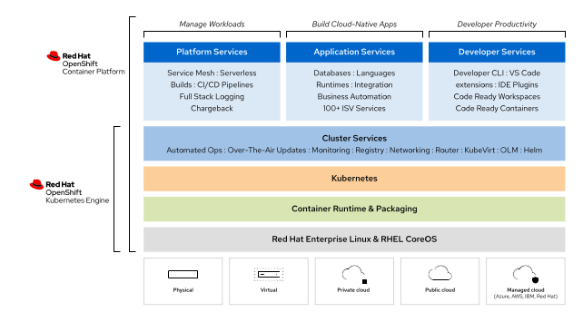

7 Red Hat OpenShift Administration II: Operating a Production Kubernetes Cluster - DO280
7.1 Describing the Red Hat OpenShift Container Plataform
7.1.1 Describing OpenShift Container Platform
RHOCP is based on Kubernetes and allow manage container at scale, a container orchestrator platform manages a cluster service that runs multiple containerized applications .
Solutions :
Red Hat OpenShift Container Platform : Enterprise-ready Kubernetes environment for building, deploying and managing container-based applications on any public or private data center. Red Hat decide when update to newer releases and which addition component to enable
Red Hat OpenShift Dedicated : Managed OpenShift environment in a public cloud, AWS, GCP, Azure, or IBM Cloud, all features of RHOCP, however Red Hat manage the cluster, we have some control of decisions as when to update to a newer release or to install add-ons.
Red Hat OpenShift Online : Public container platform shared across multiple customers, Red Hat manages the cluster life cycle.
Red Hat OpenShift Kubernetes Engine : Subset of the features present in Red Hat OpenShift RCOP, such as coreOS, CRI-O engine, web console, etc
Red Hat Code Ready Container : Minimal installation of OpenShift that we can run on a laptop to development and experimentation.
Below the services and features of Openshift
Introduction of OpenShift features
Comparing OpenShift Container Platform vs OpenShift Kubernetes Engine:

Features :
- High Availability : etc cluster store the state of the OpenShift Cluster and Applications
- Lightweight OS : CoreOS focuses on agility, portability and security
- Load Balancing : External via API, HAProxy load balance for external app and internal load balance
- Automating Scaling : can adapt to increased application traffic in real time by automatically starting new containers and terminate when the load decrease.
- Logging and Monitoring : Advanced monitoring solution based on Prometheus, also advanced logging solution based on ElasticSearch.
- Service Discovery : Internal DNS, application can rely on friendly names to find other app and services
- Storage : Allow automatic provisioning of storage on popular cloud providers and visualization platforms
- Application Management : Automate the development and deploy, automatic build containers based on source code using Source-To-Image (S2I) solution.
- Cluster Extensibility : Rely on standard extension from kubernetes, Openshift packages these extensions as operators for ease of installation, update, and management. Also include Operator Lifecycle Manager (OLM), which facilitates the discovery, installation, and update of applications and infrastructure components packaged as operators
OpenShift also includes the Operator Lifecycle Manager (OLM) which facilitates the discovery, installation, and update of applications and infrastructure components packaged as operators
7.1.2 Architecture of OpenShift
OpenShift architecture is based on declarative the nature of kubernetes. In a declarative architecture, you change the state of the system and the system updates itself to comply with the new state.
Kubernetes cluster consists of a set of nodes that run the
kubeletsystem service and a container engine.OpenShift runs exclusively the CRI-O container engine. Some nodes are control plane nodes that run the REST API, the
etcddatabase, and the platform controllers
OpenShift is a Kubernetes distribution that provides many of these components already integrated and configured, and managed by operators. OpenShift also provides preinstalled applications, such as a container image registry and a web console, managed by operators.
7.1.3 Cluster Operators
Kubernetes operators are applications that invoke the Kubernetes API to manage Kubernetes resources.
- Custom resources (CR) : store settings and configurations
- Custom resource definition (CRD) : the syntax of a custom resource is defined by a custom resource definition
Most operators manage another application; for example, an operator that manages a database server.
The purpose of an operator is usually to automate tasks.
Operator Framework
Operator Software Development Kit (Operator SDK) : Golang library and source code. Also provide container image and ansible playbook examples.
Operator Life Cycle Manager (OLM) : Application that manages the deployment, resource utilization, updates and deletion of operators. The OLM itself is an operator that comes preinstalled with OpenShift.
OperatorHub
OperatorHub provides a web interface to discover and publish operators that follow the Operator Framework standards.
Red Hat Marketplace is a platform that allow access a curated set of enterprise operators that can be deployed on OpenShift or a kubernetes cluster
OpenShift Cluster Operators : regular operators except that they are not managed by the OLM, they are managed by OpenShift Cluster Version Operators, also called as first level operator.
7.2 Verifying the Health of a Cluster
7.2.1 Intro to OpenShift Installtion Methods
Full-stack Automation : Installe provisions all compute, storage and network, on cloud or virtualization
Pre-existing Infrastructure : we can configure a set of compute, storage and network resources, can be configured on bare-metal, cloud or virtualizations providers
Deploy process
Install stages that results in a fully running OpenShift control plane :
The bootstrap machine boots and starts hosting the remote resources for booting the control plane machine, “like a repo”
Control plane machine fetch the remote resources from bootstrap machine
Control plane form an Etcd cluster
Bootstrap machine starts a temp kubernetes control plane
The temp control plane schedule the control plane to the control plane machines
The temp control plane shuts down
Bootstraps injects components to OpenShift into control plane
Installer tears down the bootstrap machine
We can customize the installer by adding custom storage class, change custom resources, adding new operators and defining new machine sets.
7.2.2 Troubleshooting OpenShit Cluster and Applications
Commands :
oc get nodes: Status of each nodeoc adm top nodes: CPU and Memory of each nodeoc describe node <my_node-name>: Resources available and usedpc get clusterversion: version of clusteroc describe clusterversion: mode details about cluster statusoc get clusteroperators: list of all cluster operatorsoc adm node-logs -u <unit> <my-node-name>: view logs- Unit can be : crio, kubelet, etc
oc adm node-logs >my-node-name>: display all journal logs of a nodeoc logs <my-pode-name>show de logs of podoc logs <my-pod-name> -c <my-container-name>: show logs of containerDebug
oc debug node/<my-node-name>
chroot /host
systemctl is-active kubelet
oc debug node/<my-node-name>
chroot /host
crictl ps
- Debug as root
[user@host ~]$ oc debug deployment/my-deployment-name --as-rootChanging a running container
oc rsh <my-pod-name>open shell inside the a podoc cp /local/path my-pod-name:/conatiner/path: copy filesoc port-forward my-pod-name local-port:remote-port: create a tcp tunel
oc get pod --level 6: Show logs on different levelsoc whoami -t: Make a token that the oc command use
7.2.3 Introducing OpenShift Dynamic Storage
Container offers two main ways of maitaining persistent storage, using volumes and bind mounts.
- Volumes are managed manuall by admin or dynamically via storage class
- Devs can mount a local directory into a container using bind mount
OpenShift use Kubernetes persistent volume framework to manage persistent storage dynamic or static.
A persistent volume claim (PVC), where appl going to request a type of storage, belongs to a specific project. To create a PVC, you must specify the access mode and size, among other options. Once created, a PVC cannot be shared between projects. Developers use a PVC to access a persistent volume (PV).
- Verify the Dynamic Provisioned storage
[user@host ~]$ oc get storageclass- Deploying Dynamically Provisioned Storage, to add volume to an application create a PersistentVolumeClaim resource and add it to application as a volume
[user@host ~]$ oc set volumes deployment/example-application \
--add --name example-storage --type pvc --claim-class nfs-storage \
--claim-mode rwo --claim-size 15Gi --mount-path /var/lib/example-app \
--claim-name example-storage- Deleting Persistent Volume Claims
[user@host ~]$ oc delete pvc/example-pvc-storage7.4 Configuring Application Security
7.4.1 Managing Sensitive Information with secrets
Kubernetes and OpenShift use secret resources to hold sensitive information :
- Password
- Sensitive configuration files
- Credentials to an external resource, such as SSH Key or OAuth token
Secrete is Base64-encoded, not stored in plain text, we can encrupt the Etcd and that encrypt secrets, config maps, routes, OAuth.
Featuers of Secrets
- Can be shared within project namespace
- Administrators can create and manage secrets that other team cdan reference in thei deploy config
- Secret data is injected into pods
- After a secret value changes we must create a new pods to inject the new data
- OpenShift exposes sensitive data to a pod as environment variable
Use cases for secrets
Credentials
- If an application expects to read sensitive information from a file, then you mount the secret as a data volume to the pod.
- Some applications use environment variables to read configuration and sensitive data. You can link secret variables to pod environment variables in a deployment configuration.
TLS and Key Pairs Used to to secure communication to a pod
- Developers can mount the secret as a volume and create a pass through route to the application.
Creating Secret
- Using Key-value
[user@host ~]$ oc create secret generic secret_name --from-literal key1=secret1 --from-literal key2=secret2- Using Key names
[user@host ~]$ oc create secret generic ssh-keys --from-file id_rsa=/path-to/id_rsa --from-file id_rsa.pub=/path-to/id_rsa.pub- Create a TLS secret
[user@host ~]$ oc create secret tls secret-tls --cert /path-to-certificate --key /path-to-keyExposing Secrets to Pods
- Create the secret
[user@host ~]$ oc create secret generic demo-secret --from-literal user=demo-user --from-literal root_password=zT1KTgk- Modify the env variable section of the deploy config
env:
- name: MYSQL_ROOT_PASSWORD
valueFrom:
secretKeyRef:
name: demo-secret
key: root_password- Set application environment variables from either secrets or configuration maps.
[user@host ~]$ oc set env deployment/demo --from secret/demo-secret --prefix MYSQL_- A secret can be mounted
[user@host ~]$ oc set volume deployment/demo --add --type secret --secret-name demo-secret --mount-path /app-secretsConfiguration Map
Similar to secrets, configuration maps decouple configuration information from container images. Unlike secrets, the information contained in configuration maps does not require protection
[user@host ~]$ oc create configmap my-config --from-literal key1=config1 --from-literal key2=config2Updating Secrets and Configuration Maps
- Extract the last data
[user@host ~]$ oc extract secret/htpasswd-ppklq -n openshift-config --to /tmp/ --confirmUpdate and save the files
Use
oc set datato update
[user@host ~]$ oc set data secret/htpasswd-ppklq -n openshift-config --from-file /tmp/htpasswd7.4.2 Controlling Application Permissions with Security Contect Contrainst
Security Context Constraints (SCCs) : a security mechanism that restricts access to resources, but not to operations in OpenShift.
- Check the list of SCCs
oc get scc- Get additional info about an SCC
[user@host ~]$ oc describe scc anyuid- View the security contect constraint that pod uses
[user@host ~]$ oc describe pod console-5df4fcbb47-67c52 -n openshift-console | grep scc- Use the
scc-subject-reviewsubcommand to list all the security context constraints that can overcome the limitations of a container:
[user@host ~]$ oc get pod podname -o yaml | oc adm policy scc-subject-review -f -- To change the container to run using a different SCC, you must create a service account bound to a pod.
[user@host ~]$ oc create serviceaccount service-account-name- Associate the service account with an SCC
[user@host ~]$ oc adm policy add-scc-to-user SCC -z service-account- Modify an existing deployment or deploy config
[user@host ~]$ oc set serviceaccount deployment/deployment-name service-account-name7.5 Configuring OpenShift Networking For Applications
7.5.1 OpenShift Software-defined Networking
- SDN (software-defined network) is a networking model that allows you to manage network services through the abstraction of several networking layers.
- SDN use CNI plug-ins that allows containers inside pods share network resources
- Common CNI plug-ins : OpenShift SDN, OVN-Kubernetes and kuryr
- OpenShift implmenets the SDN to manage networking infrastructure of the cluster and user applications
We can :
- Manage network traffic and decice how to expose the applications
- Manage communications between containers that run in the same projects
- Manage communication between pods
- Manage network from pod to a service
- Manage network from an external network to a service, or from containers to external networks
Using Services for accessing pods
Services rely on selectors (labels) that indicate which pods receive the traffic through the service. Each pod matching these selectors is added to the service resource as an endpoint. As pods are created and killed, the service automatically updates the endpoints.
OpenShift uses two subnets (onde for pods and another one for services). The traffic is forwarded in a transparent way to the pods; an agent manages routing rules to route traffic to the pods that match the selectors.
DNS Operator
The DNS operator deploys and runs a DNS server managed by CoreDNS.
The DNS operator provides DNS name resolution between pods
To check
[user@demo ~]$ oc describe dns.operator/defaultCluster Network Operator
OpenShift Container Platform uses the Cluster Network Operator for managing the SDN
- To consult the SDN configuration which is managed by the
Network.config.openshift.io
[user@demo ~]$ oc get network/cluster -o yaml7.5.2 Exposing Applications for External Access
Accessing Application from External Networks
Can use :
- HTTP
- HTTPS
- TCP
- non-TCP
- Others using Ingress and Route
OpenShift Route allow expose applicationn to external network
Describing Methods for Managing Ingress Traffic
- OpenShift implements the Ingress Controller with a shared router service that runs as a pod inside the cluster.
Route :
- Provide ingress traffic to services in the cluster
- Provide features that may not be supported by Kubernetes ingress such as TLS re-encryption, TLS passthrough and split traffic for blue-green deployments
Ingress :
- A Kubernetes resource that provides some of the same features as routes
- Accept external requests and proxy them based on the route.
- Only allow HTTP, HTTPS and server name identification SNI and TLS with SNI
Others
External load balancer : A load balancer instructs OpenShift to interact with the cloud provider in which the cluster is running to provision a load balancer.
Service external IP : This method instructs OpenShift to set NAT rules to redirect traffic from one of the cluster IPs to the container
NodePort : With this method, OpenShift exposes a service on a static port on the node IP address. You must ensure that the external IP addresses are properly routed to the nodes.
Creating Routes
[user@host ~]$ oc expose service api-frontend --hostname api.apps.acme.comSecuring Routes
Edge
Passthrough
Re-encryption
how to create a secure edge route with TLS certificate
[user@host ~]$ oc create route edge --service api-frontend --hostname api.apps.acme.com --key api.key --cert api.crt7.5.3 Configuring Network Policies
Network policies allow you to configure isolation policies for individual pods
To manage network communication between two namespaces, assign a label to the namespace that needs access to another namespace. The following command assigns the name=network-1 label to the network-1 namespace:
[user@host ~]$ oc label namespace network-1 name=network-1